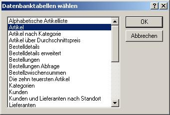
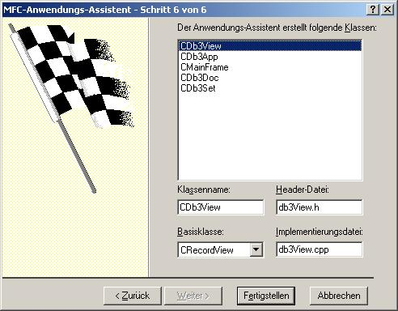
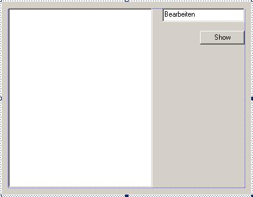
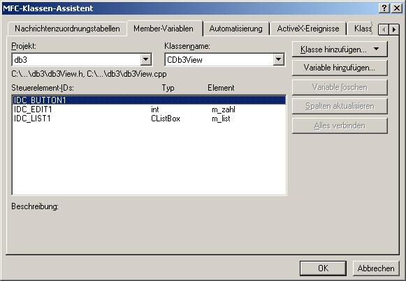

- Schritt 1 : SDI - Anwendung
- Schritt 2 : Datenbankansicht ohne Dateiunterstützung

Auf "Datenquelle" drücken.

Nun muss die Tabelle ausgewählt werden, die für das Datenbankprojekt gebraucht wird.
 - Schritt 6 : CRecordView

Es werden nur eine Listbox, ein Eingabefeld und ein Button benötigt.

Dazu muss der Klassenassistent geöffnet werden.

void CDb3View::OnButton1()
{
// Zwischenspeicher für das Formatieren des Strings
// und Konvertierung einer Int-Zahl in einen CString
CString zwsp;
// Kopieren der in dem Editfeld angezeigten Information
// in die dazugehörige Klassenvariable
UpdateData();
// Löschen vorheriger Einträge der Listbox
m_list.ResetContent();
// Öffnen der DB wenn sie noch nicht offen ist
// wird normalerweise nicht gebraucht
// aber zur Sicherheit :-)
if (!m_pSet->IsOpen())
m_pSet->Open();
// Da ich nur die Datensätze anzeigen möchte, dessen Attribut
// "BestellteEinheiten" gleich der Zahl ist, die man in das Editfeld
// eingegeben hat, muss ein Filter aktiviert werden.
// Dieser ist nur eine CString Membervariable der Klasse CRecordSet
// und beinhaltet eigentlich nur den Teil der SQL-Klausel, die nach dem
// Schlüssenwort "Where" folgt
m_pSet->m_strFilter.Format("[BestellteEinheiten]=%d",m_zahl);
// Das CRecordSet muss nun unter Anwendung des Filters noch einmal
// neu geladen werden, damit der Filter Wirkung zeigt
m_pSet->Requery();
// Solange, bis kein weiteres Element in der Tabelle angekommen
while (!m_pSet->IsEOF())
{
// Den in die Listbox zu schreibenden String zusammenstellen
zwsp.Format("%d; %s",m_pSet->m_Artikel_Nr,m_pSet->m_Artikelname);
// String zur Listbox hinzufügen
m_list.AddString(zwsp);
// Zum nächsten Datensatz im CRecordSet springen
m_pSet->MoveNext();
}
}